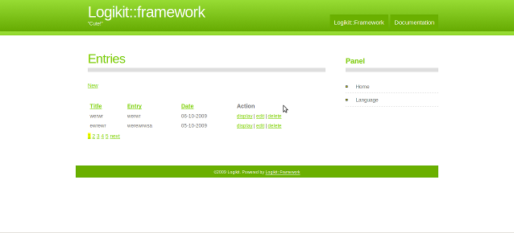

Five Minutes Blog Tutorial
Here's how you can create a blog using Logikit::Framework in five minutes.
Preparing the Database Tables
Run the SQL statements below to create the entries table:
CREATE TABLE IF NOT EXISTS `entries` (
`id` int(11) unsigned NOT NULL auto_increment,
`title` char(100) NOT NULL,
`entry` longtext NOT NULL,
`date` date NOT NULL,
PRIMARY KEY (`id`)
) ENGINE=MyISAM DEFAULT CHARSET=latin1 AUTO_INCREMENT=1 ;
Installation Instructions
- Unzip the package.
- Upload the LF folders and files to your server.
Optionally , if you want to use a database:
- Open the application/config/database.ini file with a text editor and change the database settings in the "development" area.
[development]
driver = mysql
host = localhost
;port = 3306
schema = framework
username = root
password = mypass
where "schema" will be your database name.
- Open the application/config/config.php file with a text editor and change the line
define("DB_ENVIRONMENT" , 'none'); to
define("DB_ENVIRONMENT" , 'development');
...and you are done!
Setting the Environment
We will start with a new LF installation. Once you'll have an idea on how it works, you may invoke the generator anytime you need it.
Generating the Code
If your webroot is /var/www on your localhost, you can see your application running
http://localhost/framework/
Here's how it will look like:

Took much less than five minutes? Nothing we can do!